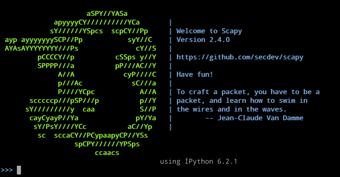
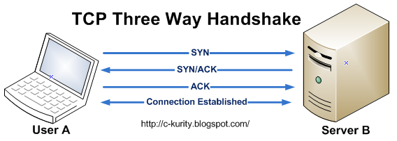

Introduction to Packet Manipulation with Scapy
Packet Crafting 101
Scapy
- Written in Python
- Popular with offensive security professionals (hackers)
- Developers: Phillipe Biondi (author) & Guillaume Valadon
Scapy (cont.)
- Crafting network packets/frames
- Sniffing and manipulating recorded packets
- Integrates with Wireshark(pcap) network captures
- Interactive by default, packets can be crafted on the fly or scripted
Scapy: Common use cases
- Network scanning (custom use cases)
- Fuzzing network stacks or protocols
- Reverse engineering network protocols or archaic implementations
- Manipulating and replaying/sppofing legitimate traffic
- Network testing (testing QoS or router behavior)
Scapy: Use case
- Anything you want
- Including things that aren't typically supported or do not make sense most of the time
- Example: Sending a TCP packet with a UDP packet inside of it
- Might have to write a special program in C or extremely low level otherwise
Installing scapy
From pip
pip install scapy
Or install from apt/dnf/yum/pacman, etc
apt install scapy
Running scapy
- root privileges required for sending, receiving, or sniffing packets
- Two ways of running it:
- Interactive (prompt)
- Python script
Running scapy
Interactive scapy executable*
scapy
*From command prompt

Running scapy (cont.)
Within iPython or Python interactive/or within script
from scapy.all import *
Three-way handshake
How TCP connections are initiated
